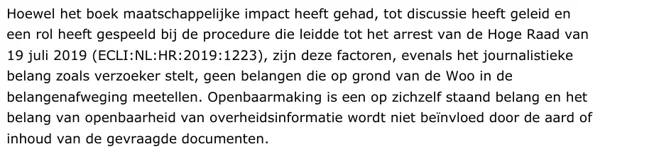

Prueba · Carta
Cámara de Representantes a la Comisión Asesora de Recursos, escrito explicativo sobre la resolución Woo W2026005, 14 de octubre de 2026
El pasaje
«Aunque el libro ha tenido impacto social, ha suscitado debate y ha desempeñado un papel en el procedimiento que condujo a la sentencia del Tribunal Supremo del 19 de julio de 2019 (ECLI:NL:HR:2019:1223), estos factores, al igual que el interés periodístico que alega el solicitante, no son intereses que cuenten en la ponderación de intereses con arreglo a la Woo». Página 10 del escrito explicativo (página 2 de este PDF). Traducido del neerlandés; el texto original figura a continuación.
Texto original
“Hoewel het boek maatschappelijke impact heeft gehad, tot discussie heeft geleid en een rol heeft gespeeld bij de procedure die leidde tot het arrest van de Hoge Raad van 19 juli 2019 (ECLI:NL:HR:2019:1223), zijn deze factoren, evenals het journalistieke belang zoals verzoeker stelt, geen belangen die op grond van de Woo in de belangenafweging meetellen.” Las líneas se han unido aquí.

Por qué importa este documento
En este escrito explicativo del 14 de octubre de 2026, el Servicio de Asuntos Jurídicos de la Cámara de Representantes (Tweede Kamer) defiende ante la Comisión Asesora de Recursos la resolución del 20 de abril de 2026 sobre la solicitud Woo (Ley neerlandesa de Acceso Público a la Información) de Giltay. En esa solicitud, Giltay pedía documentos de la Comisión de los Servicios de Inteligencia y Seguridad sobre el caso descrito en el libro; según la resolución, allí no se encontró nada. En el escrito, el servicio reconoce que el libro ha tenido impacto social, ha suscitado debate y ha desempeñado un papel en el procedimiento que condujo a la sentencia del Tribunal Supremo de los Países Bajos del 19 de julio de 2019 en el caso de las Madres de Srebrenica contra el Estado neerlandés. Inmediatamente después, el servicio añade que tales factores no cuentan con arreglo a la Woo. El PDF contiene las páginas 1, 10 y 11 del documento.
Procedencia
- Documento
- Escrito explicativo de la Cámara de Representantes en el procedimiento de recurso administrativo contra la resolución Woo W2026005, con una lista de inventario y cinco documentos
- Remitente
- Oficina Woo, Servicio de Asuntos Jurídicos, Cámara de Representantes de los Estados Generales, La Haya
- Destinatario
- Comisión Asesora de Recursos de la Cámara de Representantes
- Fecha
- 14 de octubre de 2026
- Referencia
- W2026005/BZ260519
- Asunto
- «Toelichting besluit W2026005/ BZ260519 - Giltay/de Doofpotgeneraal» (explicación de la resolución W2026005)
- Referencias
- La resolución del 20 de abril de 2026 del secretario general de la Cámara de Representantes sobre la solicitud Woo de Giltay del 2 de febrero de 2026, y el recurso administrativo de Giltay del 19 de mayo de 2026
- Firmado
- Jurista Woo, Servicio de Asuntos Jurídicos; el nombre y la firma están tachados en este PDF
- Tachado
- La dirección de correo electrónico del jurista encargado del expediente (página 1) y el nombre y la firma del firmante (página 11)
- Recibido
- Por correo electrónico del secretario de la Comisión Asesora de Recursos a Giltay, 14 de octubre de 2026, firmado como «Secretaris Bezwaaradviescommissie Woo en Who» (secretario de la Comisión Asesora de Recursos Woo y Who)
- Idioma
- Neerlandés
- Páginas
- 1, 10 y 11 de 11; no se incluyen la lista de inventario ni los cinco documentos adjuntos
- Conservado por
- Edwin Giltay, el recurrente
- Véase también
- Tribunal Supremo de los Países Bajos, sentencia del 19 de julio de 2019 (ECLI:NL:HR:2019:1223)Madres de Srebrenica, escrito de agravios, 7 de julio de 2015Giltay a tres miembros de la CIVD, 20 de noviembre de 2010Comisión Permanente de Defensa a Giltay, 18 de septiembre de 2017
Citado en:
- el ensayo «La prohibición cayó, el libro quedó en pie» en el capítulo (12) «No queda otra opción»
- la sección de voces bajo el epígrafe «Reconocimientos coincidentes»
- la biografía del autor.
Documento: https://
Modificado por última vez el 15 de octubre de 2026, consultado el 26 de noviembre de 2026.

Esta página es una ficha de prueba del libro El general del encubrimiento de Edwin Giltay y del sitio web que lo acompaña.